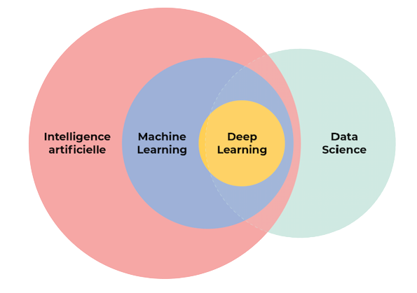

L'INTILLIGENCE ARTIFICIELLE
Définition de l'intelligence artificielle
En termes simples, l’intelligence artificielle (IA) fait référence à des systèmes ou des machines qui imitent l’intelligence humaine pour effectuer des tâches et qui peuvent s’améliorer en fonction des informations collectées grâce à l’itération. L’intelligence artificielle se manifeste sous plusieurs formes. Voici quelques exemples :
- Les chatbots utilisent l’IA pour comprendre les problèmes des clients plus rapidement et répondre plus efficacement.
- Les assistants intelligents utilisent l’IA pour analyser les informations critiques à partir de grands ensembles de données en texte libre afin d’améliorer la planification.
- Les moteurs de recommandation peuvent suggérer automatiquement des émissions télévisées en fonction des habitudes des téléspectateurs.
L’intelligence artificielle est davantage liée au processus et à la capacité de réflexion et d’analyse de données approfondies au maximum qu’à un format ou une fonction particuliers. Bien que l’IA évoque des images de robots ultra-performants ressemblant à des humains et envahissant le monde, l’IA n’est pas destinée à nous remplacer. Elle vise à améliorer de manière significative les capacités et les contributions humaines. Cela en fait un atout commercial très précieux.
A quoi sert l’intelligence artificielle ?
Les machines dotées d'une intelligence artificielle mémorisent des comportements. Ce travail de mémorisation leur permet par la suite de résoudre des problèmes, et d'agir correctement face à telle ou telle situation. Cet apprentissage se réalise à l'aide de bases de données et d'algorithmes. Ce travail complexe aide la machine à mesurer l'importance d'un problème, à passer au crible les solutions possibles et les situations passées similaires afin de bien agir.
C'est en réalité un système de statistiques sophistiqué et très performant qui conduisent la machine à prendre une décision ou à avoir le comportement attendu. Pour mesurer son degré d'intelligence, une machine est soumise au test de Turing. Ce test porte le nom de l'inventeur de l'IA, Alan Turing. Ce mathématicien britannique fut l'un des premiers à se demander, en 1950, si une machine était capable de penser. Le test de Turing consiste à converser avec la machine et à lui demander de créer quelque chose avec des critères précis qu'elle se doit de respecter.
Termes associés à l’intelligence artificielle
IA est devenu un terme fourre-tout pour les applications qui effectuent des tâches complexes nécessitant auparavant une intervention humaine, comme communiquer avec les clients en ligne ou jouer aux échecs. Le terme est souvent utilisé de manière interchangeable avec les domaines qui composent l’IA tels que le machine learning et le deep learning. Il y a cependant des différences. Par exemple, le machine learning est axé sur la création de systèmes qui apprennent ou améliorent leurs performances en fonction des données qu’ils traitent. Il est important de noter que, même si l’intégralité du machine learning repose sur l’IA, cette dernière ne se limite pas au machine learning.
Pour tirer le meilleur parti de l’intelligence artificielle, de nombreuses entreprises investissent massivement dans des équipes de data science. La data science, un domaine interdisciplinaire qui utilise des méthodes scientifiques et autres pour valoriser les données, associe des compétences issues de domaines tels que les statistiques et l’informatique à des connaissances commerciales afin d’analyser les données collectées provenant de sources multiples.
Les sous-domaines de l'intelligence artificielle

Machine Learning
Les machines dotées d'une intelligence artificielle mémorisent des comportements. Cet apprentissage se réalise à l'aide de bases de données et d'algorithmes.
En savoir plus
Deep Learning
Les machines dotées d'une intelligence artificielle mémorisent des comportements. Cet apprentissage se réalise à l'aide de bases de données et d'algorithmes.
En savoir plusComputer Vision
Les machines dotées d'une intelligence artificielle mémorisent des comportements. Cet apprentissage se réalise à l'aide de bases de données et d'algorithmes.
En savoir plusNaturel Language Processing
Les machines dotées d'une intelligence artificielle mémorisent des comportements. Cet apprentissage se réalise à l'aide de bases de données et d'algorithmes.
En savoir plusLes outils vous etes besoin pour IA